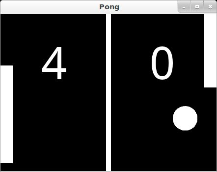

{kind=link}
Table Of Contents
Pong Game Tutorial¶
Introduction¶
ようこそ Pong チュートリアルへ
このチュートリアルでは、 Kivy を使用して pong を作成する方法を説明します。 Create an application で説明されているような基本的なアプリケーションから始めて、それをプレイ可能な pong ゲームに変え、 その途中の各ステップを説明します。
{kind=link}
このチュートリアルを開始するには、以下のチェック・リストをクリアする必要があります:
あなたがインストールした Kivy がちゃんと動いていること。 詳細な説明については、 Installing Kivy セクションを参照してください
あなたが基本的な Kivy アプリケーションの実行方法を知っていること。 そうでない場合は Create an application を参照してください。
あなたがプログラミング・ガイドを読み、 基本的なウィジェットの概念(A Simple Paint App)と kv 言語(kv language)の基本的な概念(Kv language)の両方を理解している場合は、 最初の2ステップをスキップしてステップ3に進む事ができるでしょう。
注釈
ソースコード全体(および各ステップのソースコード・ファイル) は、 tutorials/pong/ の下の Kivy examples のディレクトリにあります。
準備はいいかい？ じゃあ始めよう！
Getting Started¶
Getting Started
本当にシンプルなKivyアプリを起動して実行することから始めよう。 ゲーム用のディレクトリと、 main.py という名前のファイルを作成してください
1from kivy.app import App
2from kivy.uix.widget import Widget
3
4
5class PongGame(Widget):
6 pass
7
8
9class PongApp(App):
10 def build(self):
11 return PongGame()
12
13
14if __name__ == '__main__':
15 PongApp().run()
上記の通り打ち込んで、 アプリケーションを実行してください。 この時点で黒いウィンドウが表示されるはずです。 私たちが行ったことは、 非常に単純な Kivy App の作成です。 これは PongGame ウィジェット・クラスのインスタンスを作成し、 それをアプリケーション UI のルート要素として返します。 あなたはこれをウィジェットの階層ツリーとして意識する必要があります。 Kivy は、 このウィジェット・ツリーをデフォルトのウインドウに配置します。 次のステップでは、 「PongGame ウィジェット」の見え方を定義して、 Pong の背景とスコアを描画します。
Add Simple Graphics¶
pong.kv の作成
私達は PongGame クラスのルック・アンド・フィールを定義するために .kv ファイルを使用します。 App クラスは PongApp と呼ばれているので、 pong.kv というファイルを同一ディレクトリに作成するだけで、 アプリケーションの実行時に自動的にロードされます。 なので ``pong.kv`` という名前の新しいファイルを作成し、 以下の内容を追加します。
1#:kivy 1.0.9
2
3<PongGame>:
4 canvas:
5 Rectangle:
6 pos: self.center_x - 5, 0
7 size: 10, self.height
8
9 Label:
10 font_size: 70
11 center_x: root.width / 4
12 top: root.top - 50
13 text: "0"
14
15 Label:
16 font_size: 70
17 center_x: root.width * 3 / 4
18 top: root.top - 50
19 text: "0"
注釈
COMMON ERROR: kv ファイルの名前、 たとえば pong.kv は、 アプリの名前と一致する必要があります。 つまり PongApp (のAppより前の部分で先頭は小文字) です。
ここであんたがアプリを実行すると、 中央に縦棒が表示され、 プレーヤーのスコアである 2 つのゼロが表示されます。
Explaining the Kv File Syntax¶
次のステップに進む前に、 あなたが作成したばかりの kv ファイルの内容を詳しく見て、 何が起こっているのかを把握することをお勧めします。 あなたが何が起こっているかを理解しているなら、 ここはスキップして次のステップに進んでください。
一番最初の行にあるのが以下です:
#:kivy 1.0.9
この最初の行は、 すべての kv ファイルで必須です。 #:kivy で始まり、 その後に空白と目的の Kivy バージョンが続く必要があります (Kivy は、 最低限必要なバージョンであることを確認したり、後で下位互換性を処理したりできます)。
続いて、 PongGame インスタンス全体で適用されるルールの定義を開始します:
<PongGame>:
...
Python と同様に、 kv ファイルはインデントを使用してネストされたブロックを定義します。 < と > 文字で囲まれたクラス名で定義されたブロックは Widget ルールです。 名前付きクラスの任意のインスタンスに適用されます。 もし、 この例であなたが PongGame を Widget に置き換えた場合、 すべての Widget インスタンスに対してこれらのルールが定義されるため、 すべての Widget インスタンスに縦線と 2 つの Label ウィジェットが含まれるようになります。
ルール・セクション内にさまざまなブロックを追加して、 適用されるウィジェットのスタイルとコンテンツを定義できます。 以下の事が可能です:
プロパティ(property)の値(values)をセットする
子ウィジェット達を追加する
ウィジェットのレンダリング方法を定義するグラフィックス命令を追加できる canvas セクションを定義する
<PongGame> ルール内の最初のブロックは canvas ブロックです:
1<PongGame>:
2 canvas:
3 Rectangle:
4 pos: self.center_x - 5, 0
5 size: 10, self.height
この canvas ブロックは PongGame ウィジェットがいくつかのフラフィック基本要素(primitives)を描画する必要があることを示しています。 この場合、 canvas に長方形(rectangle)を追加します。 長方形の位置を、ウィジェットの水平方向の中心から左に 5 ピクセル、 y を 0 に設定します。 長方形のサイズは幅 10 ピクセルに設定され、 高さはウィジェットの高さに設定されます。 このようにしてグラフィックを定義する利点は、 このようにグラフィックスを定義する利点は、 値を設定するのに使用されているウィジェットのプロパティが変更されたときに、 レンダリングされる長方形が自動的に更新されることです。
注釈
アプリケーション・ウィンドウのサイズを変更して、 何が起こるかを確認して見てください。 はい、あなたのおっしゃるとおり、 UI 全体が自動的にサイズ変更されます。 Window の標準的な振る舞いは、 そのプロパティ size_hint に基づいて要素のサイズを変更することです。 デフォルトのウィジェット size_hint は (1,1) です。 つまり、x 方向と y 方向の両方で 100％ 引き伸ばされ、 利用可能なスペースを埋めます。 長方形の位置とサイズ、そしてスコア・ラベルの center_x と上部は PongGame クラスのコンテキスト内で定義されているため、 対応するウィジェット・プロパティが変更されると、 これらのプロパティは自動的に更新されます。 Kv 言語を使用すると、自動のプロパティ結び付けが(automatic property binding)可能になります。 :)
私達が追加した最後の 2 つのセクションも割と似ています。 それぞれは Label ウィジェットを、 子ウィジェットとして PongGame ウィジェットに追加します。 今のところ、 テキストは両方とも "0" に設定されています。 私達がロジックを実装したら、それを実際のスコアに結び付けますが、 巨大な font_size を設定し、ルート・ウィジェットに対して相対的に配置したため、 ラベルの表示は既に適切になっています。 子ブロック内で root キーワードを使用すると、 ルールが適用される 親/ルート ウィジェット (この場合は PongGame) を参照できます:
1<PongGame>:
2 # ...
3
4 Label:
5 font_size: 70
6 center_x: root.width / 4
7 top: root.top - 50
8 text: "0"
9
10 Label:
11 font_size: 70
12 center_x: root.width * 3 / 4
13 top: root.top - 50
14 text: "0"
Add the Ball¶
Add the Ball
さて、 これでプレイするための基本的なピンポン台ができましたが、 まだプレイヤーと、打ち返すボールが必要です。 ボールから始めましょう。 新しい PongBall クラスを追加して、 ボールとなるウィジェットを作成し、 跳ね返るようにします。
PongBall Class¶
PongBall クラスの Python コードは以下のとおりです:
1class PongBall(Widget):
2
3 # velocity of the ball on x and y axis
4 velocity_x = NumericProperty(0)
5 velocity_y = NumericProperty(0)
6
7 # referencelist property so we can use ball.velocity as
8 # a shorthand, just like e.g. w.pos for w.x and w.y
9 velocity = ReferenceListProperty(velocity_x, velocity_y)
10
11 # ``move`` function will move the ball one step. This
12 # will be called in equal intervals to animate the ball
13 def move(self):
14 self.pos = Vector(*self.velocity) + self.pos
そして、 ボールを白い円として描くために使用されるkvルールは以下のとおりです:
1<PongBall>:
2 size: 50, 50
3 canvas:
4 Ellipse:
5 pos: self.pos
6 size: self.size
すべてを機能させるには、 使用する Properties プロパティ・クラスと Vector のインポートも追加する必要があります。
ここで、 このステップで更新された python コードと kv ファイル全体を以下に示します:
- main.py:
1from kivy.app import App 2from kivy.uix.widget import Widget 3from kivy.properties import NumericProperty, ReferenceListProperty 4from kivy.vector import Vector 5 6 7class PongBall(Widget): 8 velocity_x = NumericProperty(0) 9 velocity_y = NumericProperty(0) 10 velocity = ReferenceListProperty(velocity_x, velocity_y) 11 12 def move(self): 13 self.pos = Vector(*self.velocity) + self.pos 14 15 16class PongGame(Widget): 17 pass 18 19 20class PongApp(App): 21 def build(self): 22 return PongGame() 23 24 25if __name__ == '__main__': 26 PongApp().run()
- pong.kv:
1#:kivy 1.0.9 2 3<PongBall>: 4 size: 50, 50 5 canvas: 6 Ellipse: 7 pos: self.pos 8 size: self.size 9 10<PongGame>: 11 canvas: 12 Rectangle: 13 pos: self.center_x - 5, 0 14 size: 10, self.height 15 16 Label: 17 font_size: 70 18 center_x: root.width / 4 19 top: root.top - 50 20 text: "0" 21 22 Label: 23 font_size: 70 24 center_x: root.width * 3 / 4 25 top: root.top - 50 26 text: "0" 27 28 PongBall: 29 center: self.parent.center 30
注意: <PongBall> ウィジェット・ルールだけでなく、 <PongGame> ウィジェット・ルールの子ウィジェット PongBall も追加されていることに注意してください。
Adding Ball Animation¶
ボールの動きを作る
クールだね！ いまや私達はボールを手にしました。 これには move 関数もありますが、まだ動いてません。 それではそれを修正しましょう。
Scheduling Functions on the Clock¶
私達はボールの move メソッドを定期的に呼び出す必要があります。 幸いなことに、 Kivy では Clock を使用して必要な関数をスケジュールし、 間隔を指定することで、 これを非常に簡単にします:
Clock.schedule_interval(game.update, 1.0/60.0)
たとえば、 上記行により、 ゲーム・オブジェクトの update 関数が60分の1秒ごと(1 秒あたり 60 回)に呼び出されます。
Object Properties/References¶
もっとも、 私達には別の問題があります。 PongBall の move 関数が定期的に呼び出されるようにしたいのですが、 ボールは PongGame クラスの kv ルール内に記述したモノを kv ファイルを介して追加しただけなので、 このコードはボール・オブジェクトへの参照を持っていません。 game オブジェクトへの唯一の参照は、 アプリケーションの build メソッドが返したモノです。
私達はボールを動かす以上のこと(例えば、ボールを壁にぶつけて、それをプレーヤーのラケットで打ち返すなど)をしなければならないので、 とにかく PongGame クラスの update メソッドが必要になるでしょう。 さらに、 私達は PongGame オブジェクトへの参照を既に持っているので、 アプリケーションがビルドされたときに新しい update メソッドを簡単にスケジュールできます:
1class PongGame(Widget):
2
3 def update(self, dt):
4 # call ball.move and other stuff
5 pass
6
7class PongApp(App):
8
9 def build(self):
10 game = PongGame()
11 Clock.schedule_interval(game.update, 1.0/60.0)
12 return game
けれども、 依然として私達が kv ルールによって作成された PongBall 子ウィジェットへの参照を持っていない事実は変わりません。 これを修正するには、 ObjectProperty を PongGame クラスに追加し、 kv ルールで作成されたウィジェットに引っ掛け(hook)ます。 これが完了したら、 update メソッド内で簡単にボールのプロパティを参照し、 端で跳ね返らせることもできます:
1class PongGame(Widget):
2 ball = ObjectProperty(None)
3
4 def update(self, dt):
5 self.ball.move()
6
7 # bounce off top and bottom
8 if (self.ball.y < 0) or (self.ball.top > self.height):
9 self.ball.velocity_y *= -1
10
11 # bounce off left and right
12 if (self.ball.x < 0) or (self.ball.right > self.width):
13 self.ball.velocity_x *= -1
子ウィジェットに ID を与え、 PongGame の ball ObjectProperty をその ID に設定することにより、 kv ファイルに引っ掛ける(hook)ことを忘れないでください:
1<PongGame>:
2 ball: pong_ball
3
4 # ... (canvas and Labels)
5
6 PongBall:
7 id: pong_ball
8 center: self.parent.center
注釈
この時点で、 ボールが跳ね回るよう、 すべてのパーツが繋げられています。 コーディングを進めているあなたは、 なぜボールが動かないのか不思議に思うかもしれません。 なぜなら今のところボールの速度は、x と y の両方で 0 に設定されているからです。 以下のコード・リストでは、 serve_ball メソッドが PongGame クラスに追加され、 アプリの build メソッドで呼び出されます。 ボールのランダムな x および y 速度を設定し、 位置もリセットするため、 将来、 プレーヤーがポイントを獲得したときにボールをリセットするために使用できます。
このステップでのコード全体は以下のとおりです:
- main.py:
1from kivy.app import App 2from kivy.uix.widget import Widget 3from kivy.properties import ( 4 NumericProperty, ReferenceListProperty, ObjectProperty 5) 6from kivy.vector import Vector 7from kivy.clock import Clock 8from random import randint 9 10 11class PongBall(Widget): 12 velocity_x = NumericProperty(0) 13 velocity_y = NumericProperty(0) 14 velocity = ReferenceListProperty(velocity_x, velocity_y) 15 16 def move(self): 17 self.pos = Vector(*self.velocity) + self.pos 18 19 20class PongGame(Widget): 21 ball = ObjectProperty(None) 22 23 def serve_ball(self): 24 self.ball.center = self.center 25 self.ball.velocity = Vector(4, 0).rotate(randint(0, 360)) 26 27 def update(self, dt): 28 self.ball.move() 29 30 # bounce off top and bottom 31 if (self.ball.y < 0) or (self.ball.top > self.height): 32 self.ball.velocity_y *= -1 33 34 # bounce off left and right 35 if (self.ball.x < 0) or (self.ball.right > self.width): 36 self.ball.velocity_x *= -1 37 38 39class PongApp(App): 40 def build(self): 41 game = PongGame() 42 game.serve_ball() 43 Clock.schedule_interval(game.update, 1.0 / 60.0) 44 return game 45 46 47if __name__ == '__main__': 48 PongApp().run()
- pong.kv:
1#:kivy 1.0.9 2 3<PongBall>: 4 size: 50, 50 5 canvas: 6 Ellipse: 7 pos: self.pos 8 size: self.size 9 10<PongGame>: 11 ball: pong_ball 12 13 canvas: 14 Rectangle: 15 pos: self.center_x - 5, 0 16 size: 10, self.height 17 18 Label: 19 font_size: 70 20 center_x: root.width / 4 21 top: root.top - 50 22 text: "0" 23 24 Label: 25 font_size: 70 26 center_x: root.width * 3 / 4 27 top: root.top - 50 28 text: "0" 29 30 PongBall: 31 id: pong_ball 32 center: self.parent.center 33
Connect Input Events¶
プレイヤーの追加とtouch入力へのリアクション
すてき！私達のボールが跳ね回っています。 今や欠けているのは、 可動するラケットとスコアの追跡だけです。 クラスおよび kv ルールの作成の詳細については、 前のステップで既に説明しているため、ここでは説明しません。 代わりに、ユーザー入力に応じて Player ウィジェットを移動する方法に焦点を当てましょう。 このセクションの最後で、 あなたは PongPaddle クラスの、 コード全体と kv ルールを取得できます。
Kivy では、 on_touch_down メソッドと on_touch_move メソッドと on_touch_up メソッドを実装することで、 ウィジェットは入力に反応できます。 デフォルトでは、 Widget クラスのこれらのメソッドの実装は、 その子ウィジェット全てで対応するメソッドを呼び出して、 子ウィジェットのいずれかが True を返すまでイベントを受け渡します。
Pong はとてもシンプルです。 ラケットは上下に動かすだけです。 実際、これは非常に単純なので、 プレイヤー・ウィジェットにイベント自体を処理させる必要さえありません。 PongGame クラスの on_touch_move 関数を実装し、 タッチが画面の左側または右側のどちらで発生したかに基づいて、 左側または右側のプレーヤーの位置を設定します。
それでは on_touch_move ハンドラーを確認してください:
1def on_touch_move(self, touch):
2 if touch.x < self.width/3:
3 self.player1.center_y = touch.y
4 if touch.x > self.width - self.width/3:
5 self.player2.center_y = touch.y
各プレイヤーのスコアを NumericProperty に保持します。 PongGame のスコア・ラベルは、 NumericProperty の score を変更することによって更新され続けます。 これにより、PongGame の子ラベルのテキスト・プロパティが更新されます。 この結び付け(binding)は、 Kivy properties が対応する kv ファイル内の参照に自動的に結び付けする(bind)ために発生します。 ボールがサイドの外に出たら、 PongGame クラスの update メソッドを変更してスコアを更新し、 ボールを再びサーブします。 PongPaddle クラスは bounce_ball メソッドも実装しているため、 ボールがラケットに当たった場所に基づいて異なるバウンドをします。 以下が PongPaddle クラスのコードです:
1class PongPaddle(Widget):
2
3 score = NumericProperty(0)
4
5 def bounce_ball(self, ball):
6 if self.collide_widget(ball):
7 speedup = 1.1
8 offset = 0.02 * Vector(0, ball.center_y-self.center_y)
9 ball.velocity = speedup * (offset - ball.velocity)
注釈
このボールの跳ね返りのアルゴリズムは非常に単純ですが、 ボールが横または下からパドルに当たると奇妙な動作をします…これは、 必要に応じてあなた自身で変更することができます。
そして、今やここに全容があります。かなりいいものになりました。
- main.py:
1from kivy.app import App 2from kivy.uix.widget import Widget 3from kivy.properties import ( 4 NumericProperty, ReferenceListProperty, ObjectProperty 5) 6from kivy.vector import Vector 7from kivy.clock import Clock 8 9 10class PongPaddle(Widget): 11 score = NumericProperty(0) 12 13 def bounce_ball(self, ball): 14 if self.collide_widget(ball): 15 vx, vy = ball.velocity 16 offset = (ball.center_y - self.center_y) / (self.height / 2) 17 bounced = Vector(-1 * vx, vy) 18 vel = bounced * 1.1 19 ball.velocity = vel.x, vel.y + offset 20 21 22class PongBall(Widget): 23 velocity_x = NumericProperty(0) 24 velocity_y = NumericProperty(0) 25 velocity = ReferenceListProperty(velocity_x, velocity_y) 26 27 def move(self): 28 self.pos = Vector(*self.velocity) + self.pos 29 30 31class PongGame(Widget): 32 ball = ObjectProperty(None) 33 player1 = ObjectProperty(None) 34 player2 = ObjectProperty(None) 35 36 def serve_ball(self, vel=(4, 0)): 37 self.ball.center = self.center 38 self.ball.velocity = vel 39 40 def update(self, dt): 41 self.ball.move() 42 43 # bounce off paddles 44 self.player1.bounce_ball(self.ball) 45 self.player2.bounce_ball(self.ball) 46 47 # bounce ball off bottom or top 48 if (self.ball.y < self.y) or (self.ball.top > self.top): 49 self.ball.velocity_y *= -1 50 51 # went off to a side to score point? 52 if self.ball.x < self.x: 53 self.player2.score += 1 54 self.serve_ball(vel=(4, 0)) 55 if self.ball.right > self.width: 56 self.player1.score += 1 57 self.serve_ball(vel=(-4, 0)) 58 59 def on_touch_move(self, touch): 60 if touch.x < self.width / 3: 61 self.player1.center_y = touch.y 62 if touch.x > self.width - self.width / 3: 63 self.player2.center_y = touch.y 64 65 66class PongApp(App): 67 def build(self): 68 game = PongGame() 69 game.serve_ball() 70 Clock.schedule_interval(game.update, 1.0 / 60.0) 71 return game 72 73 74if __name__ == '__main__': 75 PongApp().run()
pong.kv:
1#:kivy 1.0.9 2 3<PongBall>: 4 size: 50, 50 5 canvas: 6 Ellipse: 7 pos: self.pos 8 size: self.size 9 10<PongPaddle>: 11 size: 25, 200 12 canvas: 13 Rectangle: 14 pos: self.pos 15 size: self.size 16 17<PongGame>: 18 ball: pong_ball 19 player1: player_left 20 player2: player_right 21 22 canvas: 23 Rectangle: 24 pos: self.center_x - 5, 0 25 size: 10, self.height 26 27 Label: 28 font_size: 70 29 center_x: root.width / 4 30 top: root.top - 50 31 text: str(root.player1.score) 32 33 Label: 34 font_size: 70 35 center_x: root.width * 3 / 4 36 top: root.top - 50 37 text: str(root.player2.score) 38 39 PongBall: 40 id: pong_ball 41 center: self.parent.center 42 43 PongPaddle: 44 id: player_left 45 x: root.x 46 center_y: root.center_y 47 48 PongPaddle: 49 id: player_right 50 x: root.width - self.width 51 center_y: root.center_y 52
次は何をすればいいですか？¶
楽しんでください！
さて、 ピンポン・ゲームはほぼ完成しました。 あなたがこのチュートリアルで説明されていることをすべて理解した場合は、 あなた自身を褒めてやって、 ゲームを改善する方法を考えましょう。 以下に、あなたならできるいくつかのアイデアがあります:
より素敵な グラフィック/画像 を追加します。 (ヒント:
circleまたはRectangleに、 画像をテクスチャとして設定します。)一定のスコアの後にゲームを終了させます。 プレイヤーが 10 ポイントを獲得したら、 大きな「PLAYER 1 WINS」ラベルを表示したり、 ゲーム開始や一時停止やリセットするためのメイン・メニューを追加したりできます。 (ヒント:
ButtonとLabelクラスを調べて、 ウィジェットを動的に追加または削除する、 add_widget や remove_widget 関数の使用方法を理解してください。 )4 人用のピンポン・ゲームにします。 ほとんどのタブレットはマルチ・タッチをサポートしているので、 四辺それぞれにプレイヤーがいて、 同時に 4 人でプレイできたらかっこいい思いませんか?
単純な衝突チェックを修正して、 パドルの端でボールを打つと、 よりリアルな跳ね返りが得られるようにします。
注釈
ソースコード全体(および各ステップのソースコード・ファイル) は、 tutorials/pong/ の下の Kivy examples のディレクトリにあります。